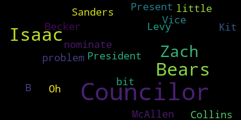

[SPEAKER_00]: Great. Oh, can you mute your, something's making noise. Oh, no, it stopped. Okay. All right. 23470 Medford City Council Caucus meeting. Yeah, just the sound.
[SPEAKER_03]: Just turn the sound off. Okay.
[SPEAKER_00]: Medford City Council Caucus meeting notice Tuesday, December 19, 2023 at 6.30 p.m. The meeting will take place in the Howard F. Alden Memorial Chambers on the second floor of Medford City Hall and via Zoom. Madam Clerk, please call the roll.
[SPEAKER_01]: Yeah, if you could. December 19. Councilor Bears. Present. Councilor Caraviello. Councilors say aye. Councilors say no.
[SPEAKER_00]: 7 present, 0 absent. Meeting is called to order. The members and the members-elect of the Medford City Council will hold a caucus on Tuesday, December 19, 2023 at 6.30 p.m. in the Medford City Council Chamber on the second floor of Medford City Hall and via Zoom. The purpose of the caucus is for the Council to hold a non-binding vote to designate a City Council President and City Council Vice President for the calendar year 2024. For further aids, information, and accommodations, contact the city clerk at 781-393-2425. Sincerely yours, Isaac B. Zach Bears, Council's Vice President. So we do have behind the rails with us tonight, we have Councilor-Elect Emma Lazzaro, Councilor-Elect Matt Leming, and Councilor-Elect Anna Callahan. They will be voting the out in addition to the city councilors that are returning and the councilors that are not returning will not be voting. This is all non-binding. And I will hand it to put it out for nominations. or nominations for President, Vice President?
[SPEAKER_04]: I would nominate Councilor Bears for President.
[SPEAKER_00]: A nomination for Vice President Bears or Councilor Bears. Why are you staring at me like that? Okay. A nomination for Councilor Bears for President. Do I have a second on that nomination? Second. Seconded by Councilor Tseng. Do I have any other nominations for President for the term beginning 2024? Seeing none, do I have any, do you want to take the role on the president first and then go to vice president or take all the nominations first? All right, so we have one nomination for Councilor Bears for president, the term started 2024. Madam Clerk, if you could call the roll, so that would be the current councilors minus the outgoing councilors and the new councilors, so. Yes. Okay, get us, he can do whatever he wants. Councilor Bears?
[Tseng]: Present.
[SPEAKER_00]: I think we'll skip Councilor Caraviello because it's outgoing. Correct? We skipped the outgoing, it's non-binding, so we're skipping the outgoing. Okay. Councilor Palacios?
[SPEAKER_04]: Councilor Bears? He stays full name. Yes. Councilor Isaac B. Zach-Bears. I'm not going to. Councilor Stephanie.
[Tseng]: Councilor Isaac. Zach-Bears. Councilor Sanders. Councilor Isaac B. Zach-Bears. Councilor McAllen. Councilor Isaac Becker. Councilor Isaac Zach-Bears. Councilor Levy. Councilor Bears.
[SPEAKER_00]: Thank you, so that is, that's six for Councilor Bears, one abstention. Yes, as we have one present. So motion stands for, the non-binding motion stands for Council President Bears beginning 2024 terms. Congratulations, Councilor Bears.
[SPEAKER_01]: Thank you, thank you, thank you. He said after he left.
[SPEAKER_00]: Unless you have any words, we can go to nominations for Vice President.
[SPEAKER_01]: I just want to thank my colleagues for their support as we move into a new term. Thank you.
[SPEAKER_00]: Thank you. Councilor Tseng.
[Tseng]: I'd like to nominate Kit Collins for Vice President.
[SPEAKER_00]: The nomination from Councilor Tseng for Councilor Collins as Vice President, seconded by Vice President Bears. Do we have any other nominations for Vice President? Seeing none, we will call the roll for Councilor Collins being considered for... I'm sorry? No, I'm still President. This is just for them, I guess, for the sake of... I don't know.
[SPEAKER_01]: Okay, yeah, let's have belly. Take columns.
[SPEAKER_03]: That's what it comes. So that's what it comes across.
[Tseng]: That's a little bit. Oh, that's the problem.
[SPEAKER_00]: So we have six for Councilor Collins, one present, none against. Councilor Collins has been named a vice president for the term, sorry, 2024. Is there anything you'd like to say or?
[SPEAKER_04]: Even though this is the non-binding vote, we'll do this again in January. I want to thank my co-workers and future co-workers for their support and I look forward to supporting the work of the council over the coming year. Thank you.
[SPEAKER_00]: Thank you, councillors. Any further discussion? Second. Motion of councillor Tseng to adjourn. Seconded by Vice-President Bears. All those in favor? Aye. All those opposed? Motion passes. Meeting is adjourned. We will return for the seven o'clock meeting.
|
total time: 0.55 minutes total words: 39  |
|||
{kind=link}